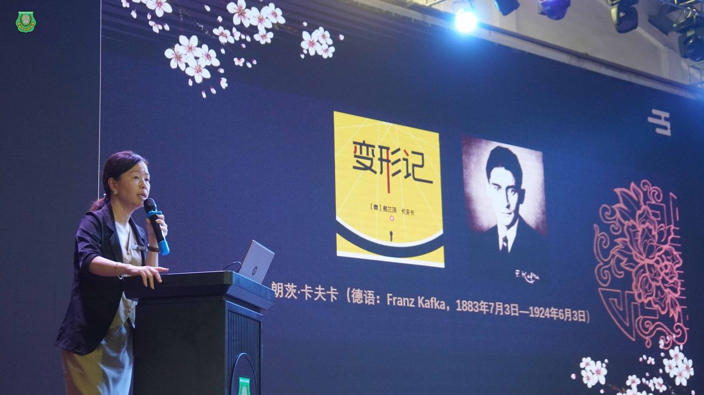
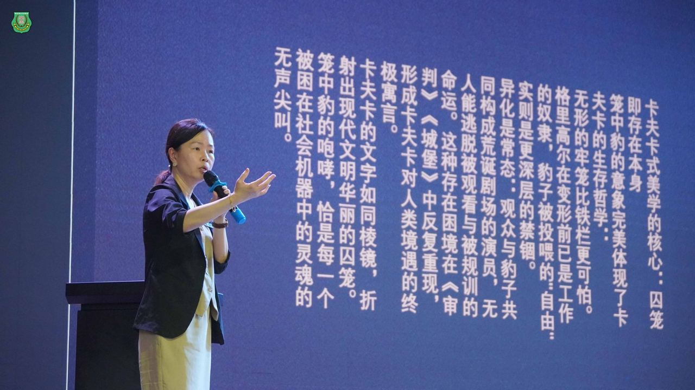
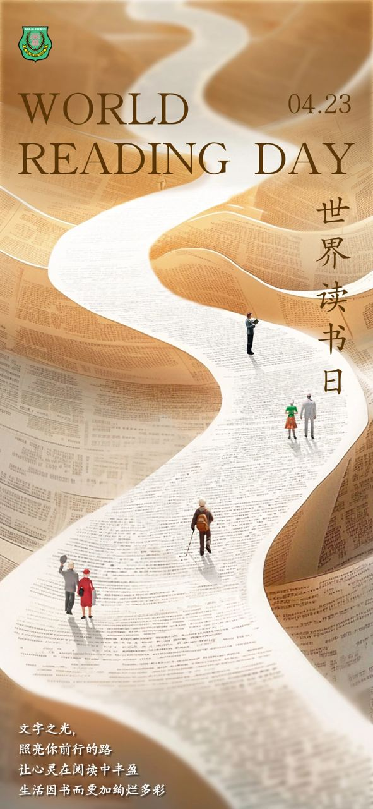
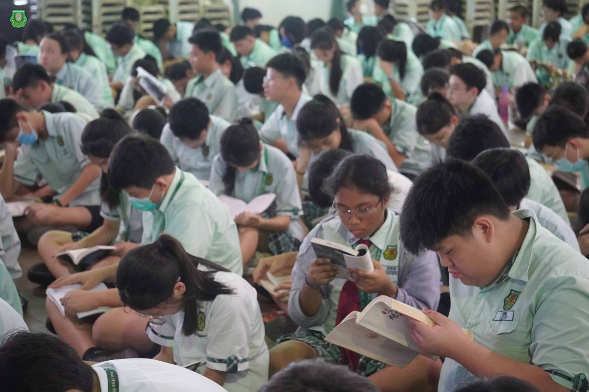
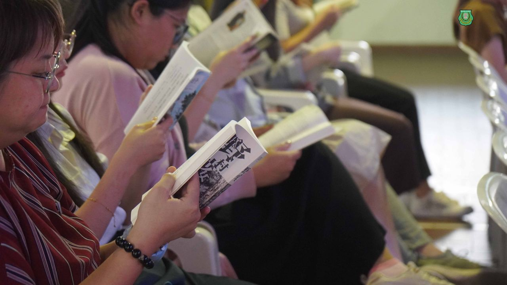
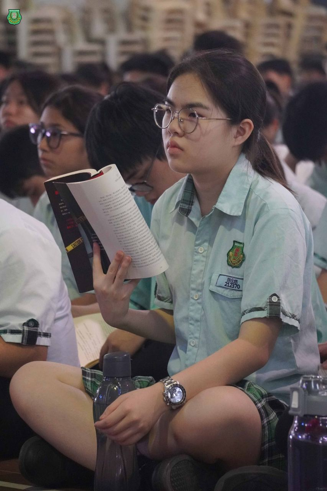
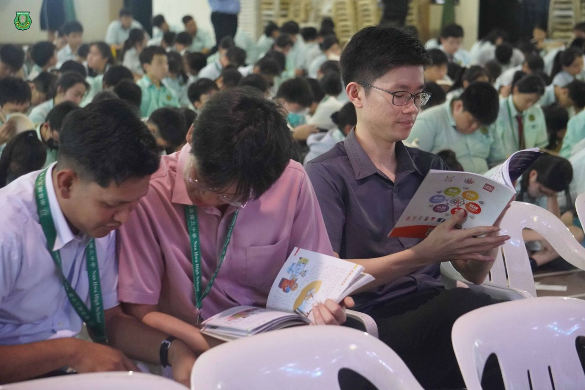
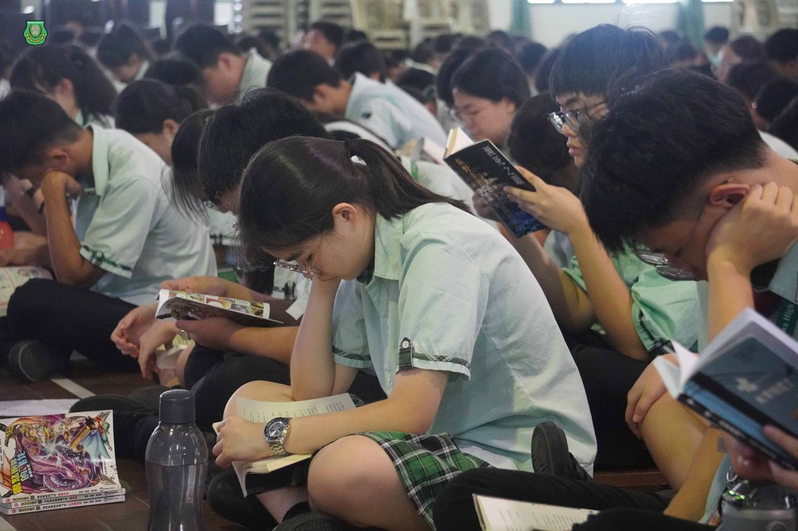

423 世界阅读日 ·
423 世界阅读日 ·
悦读南华 · 书香盈室
4月23日，南华独中迎来了一年一度的“世界阅读日”（World Reading Day）。在这一天，全校师生齐聚礼堂，参与主题为“悦读南华”的校园共读活动，在书香之中共赴一场心灵的旅程。
“文字之光，照亮你前行的路；
让心灵在阅读中丰盈，生活因书而更加绚烂多彩。”
南华独中每朝安排了二十分钟进行全校性潜心悦读的“晨读课”鼓励师生踏上由文字铺就的阅读之路，引领思绪走进文字的世界，航向知识的远洋。此活动则是响应世界阅读日，齐聚礼堂享受集体阅读带来的喜悦时光。
“悦读南华”活动期间，校长陈丽冰博士亲自为全体师生带来一场精彩的世界经典导读——弗朗茨·卡夫卡《变形记》。她引领大家深入理解作品中的荒诞意象与哲思，透过“笼中豹”的隐喻，引发关于“自由”、“存在”与“异化”的深刻思考：
“卡夫卡的文字如同棱镜，折射出现代文明华丽的囚笼……那只被围观的豹子，不就是我们在社会机制中受困的灵魂？”
校长以卡夫卡式的“存在美学”为切入，指出当代人面对生活、工作与社会压力时的自我异化，让学生体会阅读不仅是文字的浏览，更是一次灵魂的观照。
导读结束后，活动进入集体阅读环节。整个礼堂顿时变得寂静无声，唯有翻页声此起彼伏。学生与教师们手持各自喜爱的书籍，在灯光柔和的氛围下沉浸于文字的世界中，在纸上相遇，在心中共鸣。
未来，学校将持续开展类似的阅读推广活动，让文字之光长久照亮每一位南华人的成长之路。







